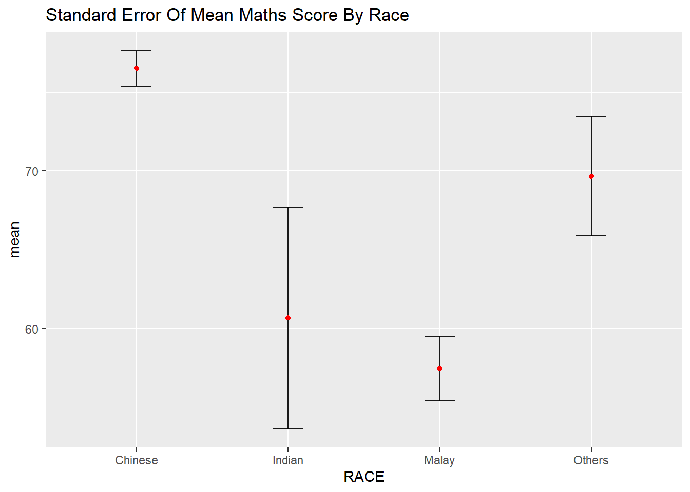
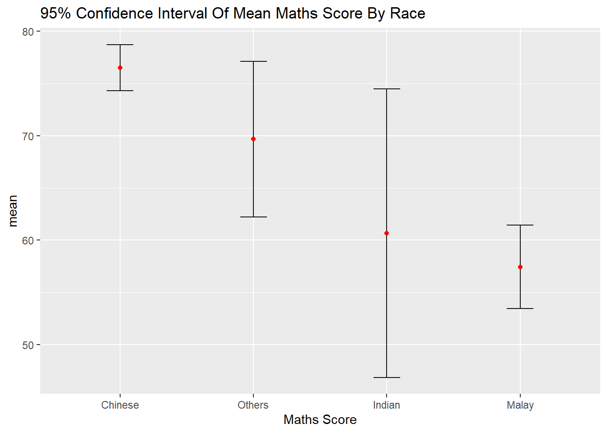
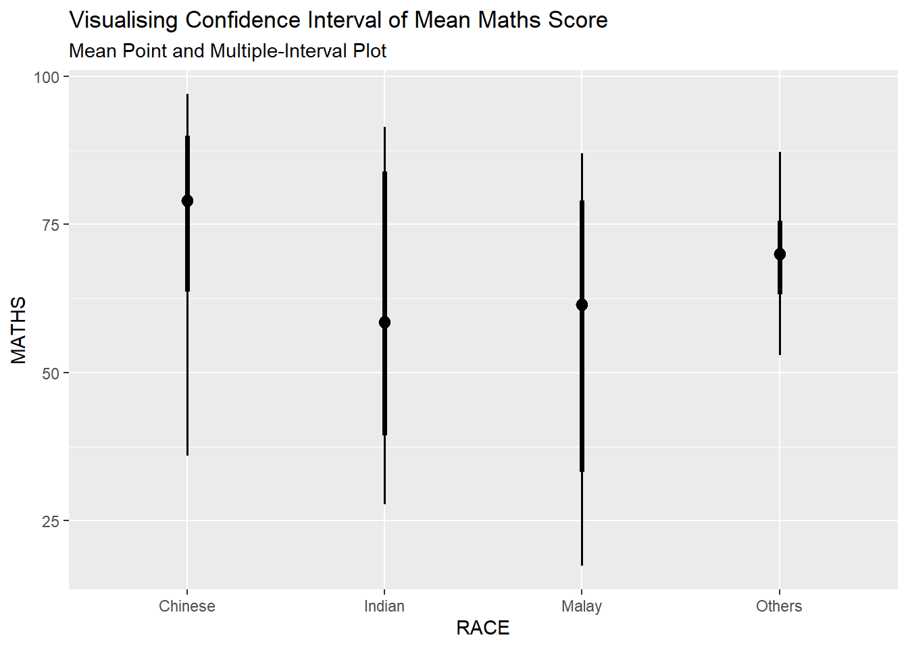
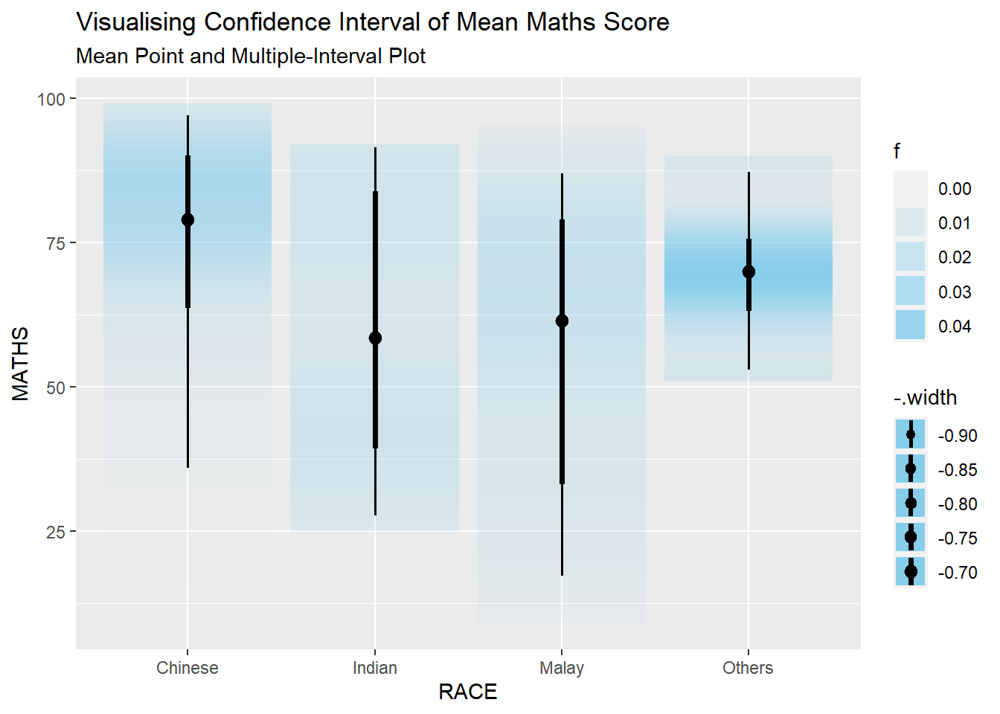
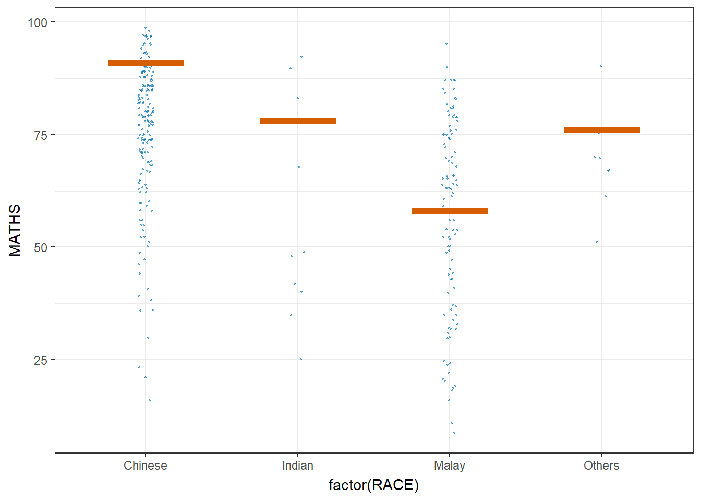

devtools::install_github("wilkelab/ungeviz")Hands-on Exercise 4 - Visual Statistical Analysis
1. Overview
In the third part of the fourth lesson, we learn to visualise uncertainty.
2. Getting Starting
2.1. Installing and Loading Packages
We will use ggstatsplotin addition totidyverse for this exercise:
We will load the packages to be used into the R environment using the p_load() function from the pacman package:
pacman::p_load(ungeviz, plotly, crosstalk,
DT, ggdist, ggridges,
colorspace, gganimate, tidyverse)2.2. Import Data
Next, we will read the data provided by the Course Instructor into the R environment. We will use the read_csv() function from the readr package found in tidyverse.
exam_data <- read_csv("data/Exam_data.csv")
glimpse(exam_data)Rows: 322
Columns: 7
$ ID <chr> "Student321", "Student305", "Student289", "Student227", "Stude…
$ CLASS <chr> "3I", "3I", "3H", "3F", "3I", "3I", "3I", "3I", "3I", "3H", "3…
$ GENDER <chr> "Male", "Female", "Male", "Male", "Male", "Female", "Male", "M…
$ RACE <chr> "Malay", "Malay", "Chinese", "Chinese", "Malay", "Malay", "Chi…
$ ENGLISH <dbl> 21, 24, 26, 27, 27, 31, 31, 31, 33, 34, 34, 36, 36, 36, 37, 38…
$ MATHS <dbl> 9, 22, 16, 77, 11, 16, 21, 18, 19, 49, 39, 35, 23, 36, 49, 30,…
$ SCIENCE <dbl> 15, 16, 16, 31, 25, 16, 25, 27, 15, 37, 42, 22, 32, 36, 35, 45…Using glimpse to view the data, it is observed that the data contains the examination grades of a batch of primary 3 students for the subjects English, Maths, and Science.
3. Visualising Uncertainty of Point Estimates
A point estimate is a single number, such as a mean. On the other hand, uncertainty is expressed as standard error, confidence interval, or credible interval.
We will plot error bars of maths score by race using the exam dataset. We first create the necessary summary statistics using the code below:
sum_stat <- exam_data %>%
group_by(RACE) %>%
summarise(n = n(),
mean = mean(MATHS),
sd = sd(MATHS)) %>%
mutate(se = sd/sqrt(n-1))Next, we use the following code to display the tibble data in an html table format:
knitr::kable(head(sum_stat, format = "html"))| RACE | n | mean | sd | se |
|---|---|---|---|---|
| Chinese | 193 | 76.50777 | 15.69040 | 1.132357 |
| Indian | 12 | 60.66667 | 23.35237 | 7.041005 |
| Malay | 108 | 57.44444 | 21.13478 | 2.043177 |
| Others | 9 | 69.66667 | 10.72381 | 3.791438 |
3.1. Plotting Standard Error Bars of Point Estimates
Next, we plot the standard error bars of mean maths score by race using the code below:
Codes here
ggplot(data = sum_stat) +
geom_errorbar(aes(x = RACE,
ymin = mean-se,
ymax = mean+se),
width = 0.2,
color = "black",
alpha = 0.9,
size = 0.5) +
geom_point(aes(x = RACE,
y = mean),
stat = "identity",
color = "red",
size = 1.5,
alpha = 1) +
ggtitle("Standard Error Of Mean Maths Score By Race")
3.2. Plotting Confidence Interval of Point Estimates
Next, we plot the confidence interval of mean maths score by race.
Codes here
ggplot(data = sum_stat) +
geom_errorbar(aes(x = reorder(RACE, -mean),
ymin = mean-1.96*se,
ymax = mean+1.96*se),
width = 0.2,
color = "black",
alpha = 0.9,
size = 0.5) +
geom_point(aes(x = RACE,
y = mean),
stat = "identity",
color = "red",
size = 1.5,
alpha = 1) +
labs(x = "Maths Score",
title = "95% Confidence Interval Of Mean Maths Score By Race")
3.3. Visualising Uncertainty of Point Estimates Using Interactive Error Bars
Next, we plot an interactive graph for the 99% confidence interval of mean maths score by race.
Codes here
shared_df = SharedData$new(sum_stat)
bscols(widths = c(4,8),
ggplotly((ggplot(data = shared_df) +
geom_errorbar(aes(x=reorder(RACE, -mean),
ymin=mean-2.58*se,
ymax=mean+2.58*se),
width=0.2,
colour="black",
alpha=0.9,
size=0.5) +
geom_point(aes(x=RACE,
y=mean,
text = paste("Race:", `RACE`,
"<br>N:", `n`,
"<br>Avg. Scores:", round(mean, digits = 2),
"<br>95% CI:[",
round((mean-2.58*se), digits = 2), ",",
round((mean+2.58*se), digits = 2),"]")),
stat="identity",
color="red",
size = 1.5,
alpha=1) +
xlab("Race") +
ylab("Average Scores") +
theme_classic() +
theme(axis.text.x = element_text(
angle = 45, vjust = 0.5, hjust=1)) +
ggtitle("99% Confidence interval of average /<br>maths scores by race")),
tooltip = "text"),
DT::datatable(shared_df,
rownames = FALSE,
class="compact",
width="100%",
options = list(pageLength = 10,
scrollX=T),
colnames = c("No. of pupils",
"Avg Scores",
"Std Dev",
"Std Error")) %>%
formatRound(columns=c('mean', 'sd', 'se'),
digits=2))4. Visualising Uncertainty Using ggdist
We build a visual for displaying distribution of maths score by race using the stat_pointinterval() function from the ggdist pacage.
exam_data %>%
ggplot(aes(x = RACE,
y = MATHS)) +
stat_pointinterval() +
labs(title = "Visualising Confidence Interval of Mean Maths Score",
subtitle = "Mean Point and Multiple-Interval Plot")
We can use the stat_gradientinterval() function from the ggdist package to build a visual using colour gradients.
exam_data %>%
ggplot(aes(x = RACE,
y = MATHS)) +
stat_gradientinterval(fill = "skyblue",
show.legend = TRUE) +
labs(title = "Visualising Confidence Interval of Mean Maths Score",
subtitle = "Mean Point and Multiple-Interval Plot")
5. Visualising Uncertainty with Hypothetical Outcome Plots (HOPs)
ggplot(data = exam_data,
(aes(x = factor(RACE),
y = MATHS))) +
geom_point(position = position_jitter(
height = 0.3,
width = 0.05),
size = 0.4,
color = "#0072B2",
alpha = 1/2) +
geom_hpline(data = sampler(25, group = RACE),
height = 0.6,
color = "#D55E00") +
theme_bw() +
transition_states(.draw, 1, 3)